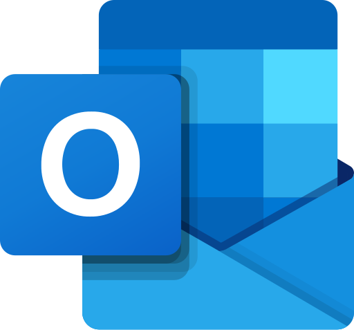
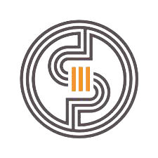

Cours IUT Informatique III-Paul Sabatier - Castres


×
Liste des cours
R1.01
-
Algorithmique
R1.02
-
Initiation au Développement web
R1.03
-
Architecture des ordinateurs
R1.04
-
Système d'exploitation
R1.05
-
Introduction aux Base de données SQL
R1.06
-
Mathématiques Discrètes
R1.07
-
Outils mathématiques fondamentaux
R1.08
-
Gestion des organisations
R1.09
-
Economie durable et Numérique
R1.10
-
Anglais
R1.11
-
Base de la communication
R1.12
-
Projet professionnel et personnel
S1.01
-
Implementation d'un besoin Client
S1.02
-
Compar Algo
S1.03
-
Mise en place de son environnement de développement
S1.04
-
Création de Base de données
S1.05
-
Recueil des besoins
S1.06
-
Découverte de l'environnement et de l'économie
P1.01
-
Portfolio